End user guide to piler enterprise edition#
This documentation applies to Piler enterprise edition 1.7.2
Revision #1
Publication date: Apr 20, 2023
Overview of how Piler works#
Piler is a secure email archive that keeps your messages in a central repository. Piler archives every email it receives whether it be an incoming, outgoing or even an internal email.
An important part of the archiving process is called indexing. It allows you to find the archived emails later based on search terms. Piler provides a web based GUI that can be accessed using a web browser, eg. Firefox, Chrome, etc.
The message indexing is not real time. It runs periodically on the archiving host every half hour. It means that you cannot see your messages instantly in the GUI as soon as they are archived. It may take up to 30 minutes until they appear in the search hits.
The archived messages are encrypted in a tamper-proof manner. When you click on a message you should see a green tick sign with the “Message is verified” text. It means that the retrieved message is exactly the same that was archived. Otherwise you may see a failure sign with the “Message Failed Verification” text. See examples below.
The GUI has a built-in access control to prevent a user from accessing others' messages. However, users with an auditor role can see every archived email.
The GUI also creates an audit event each time a user performs an action, eg. enters a search query, downloads or restores a message, etc. Only auditors and administrators may search in the audit logs.
Login#
Go to the archive URL, usually it’s https://archive.yourdomain.com/
The archive is usually configured to allow you to use your email address, and your email password as login credentials. In case of an issue, ask your IT for help.
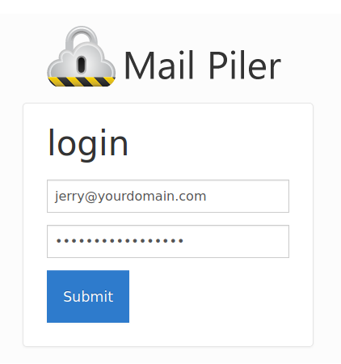
Settings#
After logging in you may view and edit your settings, eg. page length, date format and timezone. To get to the settings menu, click on your email address at the right side of the menu bar, then choose “Settings” from the dropdown menu.
You may turn on two-factor authentication as well. If you do so, be sure to write down the backup codes.
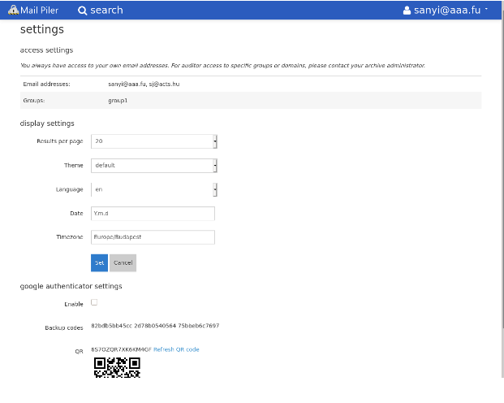
Search for emails#
When you enter the archive the GUI presents you the last 20 archived messages. To have more hits per page, go to the “Settings” menu in the upper right corner of the screen.
You may use two search interfaces: - Quick search in the long text input field - Advanced (or guided) search
Quick search#
This is the default and the preferred way of searching. Just enter the search terms, and you get the last 10000 hits in a paged view. If there are more than 10000 hits, then the exact number is shown between parentheses.
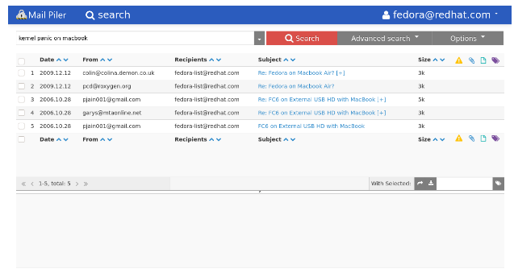
By default the GUI applies the search criteria to each field. Eg. if you type mycompany, then it searches for emails having mycompany in the sender email address, in the subject and in the body.
Note that piler indexes the textual data of the attachments as well. If the GUI is instructed to search in the body, then it also searches in the attachments as well.
The search is very intuitive. The GUI guesses the format of the words you type. If you type 2018-01-31 (2018.01.31 is also a valid date) then it knows it's a date. If it has a @ sign, then it's an email address. Otherwise it's a subject or body expression.
You may enter a finer search query by specifying keywords that precisely identify the type of the given search word.
| Field | Meaning |
|---|---|
| from: | Sender address |
| to: | Recipient address |
| subject: | Subject of the email |
| body: | Body of the email, including attachments |
| date1: | From (=not before) date (YYYY-MM-DD 00:00:00) |
| date2: | To (=not after) date (YYYY-MM-DD 23:59:59) |
| size: | Size of the message in bytes |
| attachment: | Attachment type. Possible values: word, excel, powerpoint, pdf, compressed, text, odf, image, audio, video, flash, other, any |
| a: | Same as attachment: |
Quick search examples#
Emails from Gmail on 2018.02.28:
2018-02-28 @gmail.com
Emails from Gmail before 2018.02.28 23:59:59:
date2: 2018-02-28, from: @gmail.com
Emails from the Matrix (Both sender email addresses and names are indexed):
from: Agent Smith
Emails to someone in Big company after 2018.01.31 00:00:00:
date1: 2018-01-31, to: @bigcompany.com
Emails from jane@aaa.fu OR bill@aaa.fu in 2018 March having any kind of attachment:
date1:2018-03-01, date2:2018-03-31, from: jane@aaa.fu OR bill@aaa.fu a:any
Emails from jane@aaa.fu OR bill@aaa.fu on 2018.02.15 having any kind of attachment:
date1:2018-02-15, date2:2018-02-15, from: jane@aaa.fu OR bill@aaa.fu a:any
Emails on 2018.02.15 that both jane@aaa.fu AND bill@aaa.fu received having any kind of attachment:
date1:2018-02-15, date2:2018-02-15, to: jane@aaa.fu bill@aaa.fu a:any
Viagra spam bigger than 200 kB spoofing my email address as the sender, and having 'order', then 'now' in the body:
size:>.2M, subject: viagra OR cialis, body: order << now, from: my@email.address
Emails with the following expression: ‘you have to know’:
“you have to know”
Price list to jenny@aaa.fu, in pdf attachment(s) smaller than 150 kB:
size:<150k, a: pdf, subject: price list, to: jenny@aaa.fu
Price list to jenny@aaa.fu, in pdf attachment(s) not containing the word ‘discount’:
a: pdf, subject: price list !discount, to: jenny@aaa.fu
Search using a wildcard for words like permission, permissions, permissing, etc.
(Note that you need at least 5 characters before the * symbol):
permissi*
See the following table on some additional search operators:
| Expression | Meaning |
|---|---|
| cat dog | Having cat and dog (order is not important) |
| cat OR dog | Having cat or dog |
| cat | dog |
| “cat dog” | Having the expression “cat dog” |
| !dog | Not having dog |
| -dog | Not having dog |
| “cat dog” ~10 | Proximity search |
| cat << dog | Before operator: cat has to precede dog |
Advanced (or guided) search#
The other search interface is the advanced or guided search. It's a popup window you can get by clicking on either the down arrow in the right corner of the search field or the “Advanced search” button.
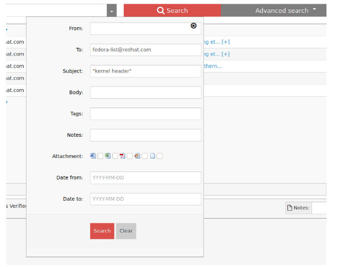
The quick search and the advanced search are equivalent, they give you the same possibilities to define a search query. The advanced search presents you a list of separated input fields giving a better visual view where you can specify the same fields (From, To, dates, etc.) as with the quick search.
Recall previous search queries#
You may see a down arrow at the right side of the search field. Click on it to see your previous search queries, then select the search term you want to execute again.
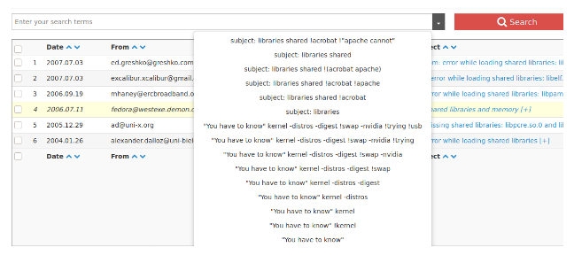
Save a search query#
The GUI lets you save then load search queries. It's especially handy if you entered a longer search expression or if you have to perform some regular searches. To save the current search query, click on the “Options” button, then select “Save” from the dropdown menu.
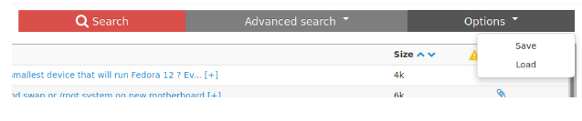
Execute a saved search criteria#
Click on the “Options” button, then select “Load”. You’ll see your saved queries. Click on the appropriate search criteria to execute it. You may remove a saved query by clicking on the “Remove” link next to the search expression.
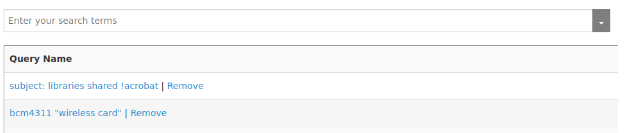
Use the search results#
If you have a search result then you can view any of the messages by clicking on the subject line or the serial number. The message is shown in the lower view pane.
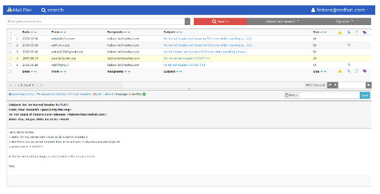
You don’t have to open a message to view its contents. You may simply hover over the subject text in the upper pane to see the first few hundred bytes of the message.
Tag messages#
You may assign tags to selected emails. To do that perform a query providing the search results you want to tag, then select the appropriate messages you want to tag. Enter the tag name to the input field, and finally click on the tag icon.
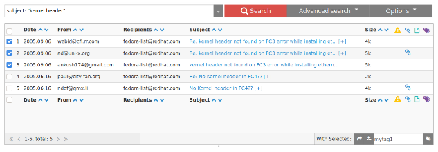
The search engine indexes the tags in regular intervals. Then you may use “tag:mytag1” search query to recall such tagged messages.
You may also remove assigned tags. To do that select the messages you want to un-tag. Then simply click on the tag icon.
Add notes to messages#
You may assign notes to individual messages. To do that select the given message, and type your notes on the preview window in the lower pane, then finally click on the “Save” button.
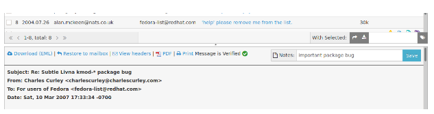
Just as with the tags, the search engine indexes your notes periodically as well. You may use the note: keyword to recall such a message, eg. note:important package bug
Download messages#
You may download individual emails by clicking on the Download link in the message preview pane. Click on the PDF icon to download the message as a PDF file. Notice the “Message is verified” text and its icon proving the message hasn’t been altered.
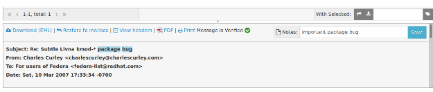
It's also possible to download the search results from the current page as a zip file. To do so, select some or all messages in the upper search results window, then click on the download icon.
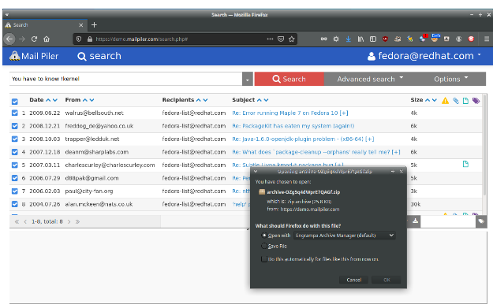
Restore messages#
You may restore a single message by clicking the message, and then in the lower pane click on the restore button. The message is restored to your mailbox.
Just as with the download feature, you may also restore several messages at a time. The steps are the same, except the final step is to click on the restore icon in the middle bar.
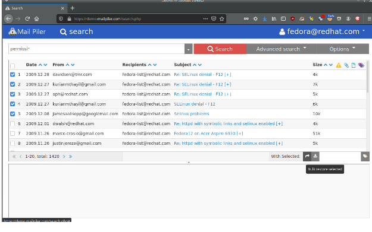